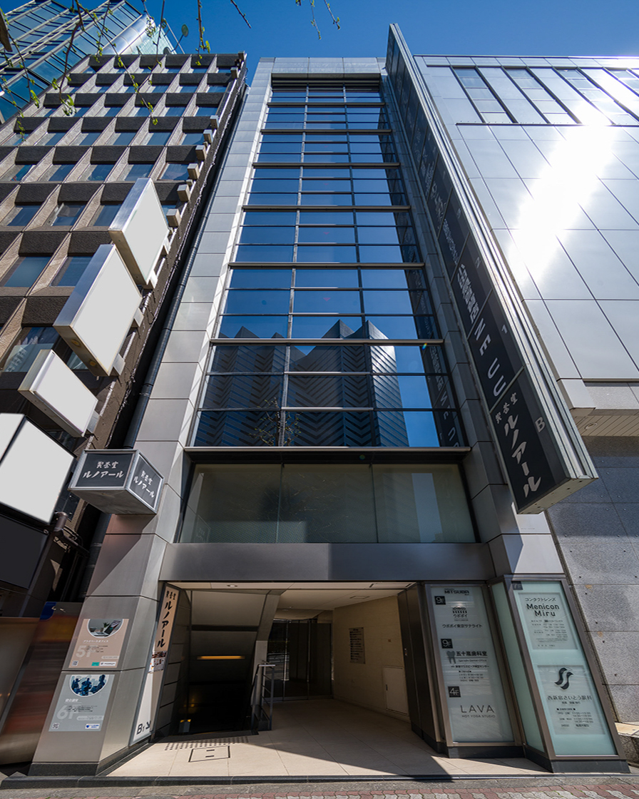

所在地：東京都新宿区西新宿1-5-11
敷地面積：467.98㎡
延床面積：3,898.90㎡
階数：地下1階 地上9階 塔屋1階
構造：鉄筋鉄骨コンクリート造
駐車場台数：6台
竣工：1988年1月
再エネ率：100％
契約電力会社：株式会社UPDATER（旧:みんな電力株式会社）
設計：清水建設株式会社
施工：清水建設株式会社
| 9F | 医療法人社団 東京誠歯会 五十嵐歯科室 |
| 9F | ウポポイ東京サテライト |
| 8F | ミルバ新宿店 |
| 7F | Menicon Miru新宿店 |
| 7F | 西新宿さいとう眼科 |
| 6F | ワイム貸会議室新宿西口 |
| 5F | ワイムビジネスプラザ新宿 |
| 4F | Rintosull 新宿西口駅前 |
| 3F | 株式会社小田急SCディベロップメント |
| 2F | 株式会社小田急百貨店 |
| 1F | NEUU TOKYO XR/FILM/ART |
| B1 | 喫茶室ルノアール 新宿ハルク横店 |